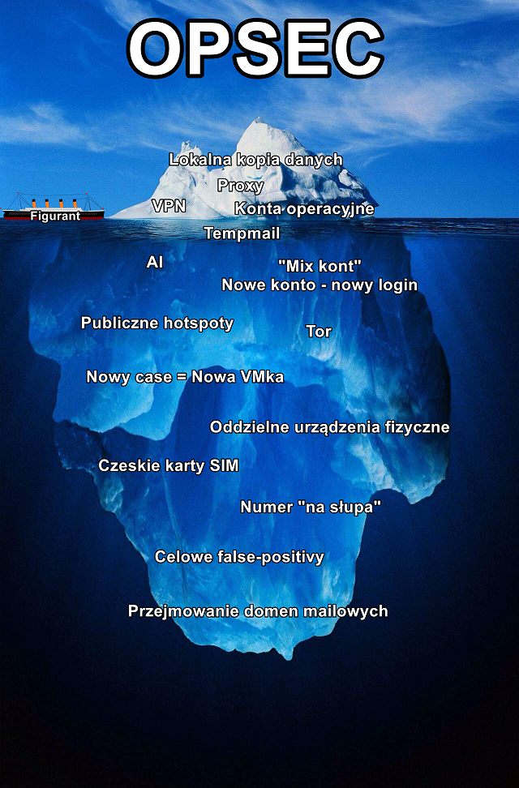
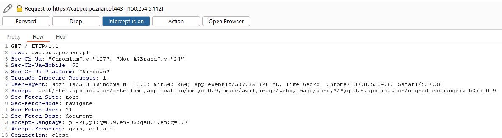

OPSEC - Operation Security¶
Co to OPSEC?¶
Bezpieczeństwo operacyjne (ang. operations security, OPSEC) - proces, który identyfikuje krytyczne informacje w celu ustalenia, czy przyjazne działania mogą być obserwowane przez wywiad wroga. Określa, czy uzyskane informacje mogą być użyteczne. W naszych przypadku to wdrożenie środków mających na celu zniwelowanie ryzyka ujawnienia krytycznych informacji. Nie chcemy w końcu by ktoś dowiedział się, ze się nim interesujemy oraz zeby odwiedzili nas smutni panowie w garniturach. Początki tego terminu sięgają wojny w Wietnamie.
OPSEC moze dotyczyć wielu obszarów; od kwesti połączenia z internetem po niepodawanie swojego prawdziwego nazwiska w formularzu kontaktowym na stronie WWW. Zachowanie anonimowości jest mozliwe, ale wymaga wielu wyrzeczeń, a błędy mogą być kosztowne. Nic nie da łączenie się ze stroną przez Tor-over-VPN i rejestrowanie się na jednorazowy mail jezeli w formie płatności podamy naszą kartę debetową. Pamiętaj, że niekażde śledztwo wymagać będzie stosowania wszystkich środków bezpieczeństwa operacyjnego.
OPSEC odnosi się do procesu identyfikowania i ochrony informacji, które mogłyby zostać wykorzystane przez przeciwników do przeprowadzenia działania przeciwko danemu podmiotowi. Celem OPSEC jest utrzymanie w tajemnicy kluczowych informacji, które mogą zaszkodzić organizacji, jeśli wpadną w niepowołane ręce.
OPSEC możemy opisać pewnym cyklem składającym się z pięciu głównych kroków:
-
Identyfikacja krytycznych informacji: Pierwszym krokiem jest ustalenie, jakie informacje, gdyby zostały odkryte, mogłyby być szkodliwe dla organizacji lub operacji.
-
Analiza zagrożeń: Następnie ocenia się potencjalnych przeciwników lub zagrożenia, aby zrozumieć, kto może być zainteresowany zdobyciem tych informacji i jak mogliby to zrobić.
-
Analiza luk: Określa się, w jaki sposób krytyczne informacje mogą być narażone na ryzyko wycieku lub odkrycia przez nieuprawnione osoby.
-
Ocena ryzyka: Na podstawie analizy zagrożeń i luk, ocenia się ryzyko związane z wyciekiem informacji, biorąc pod uwagę prawdopodobieństwo i potencjalne konsekwencje.
-
Zastosowanie środków zaradczych: Wdraża się odpowiednie środki, mające na celu ograniczenie dostępu do krytycznych informacji i zminimalizowanie ryzyka ich wycieku. Może to obejmować zarówno fizyczne, jak i cyfrowe środki ochrony.
Aby zachować odpowiednie bezpieczeństwo danych podczas prowadzenia śledztwa, możemy kultywować poniższe metody, które przedstawione zostały w postaci "góry lodowej". Im wcześniej wymieniona jest metoda - tym bardziej powinna być traktowana jako oczywista.
Góra lodowa OPSECu¶

Warstwa wierzchnia - Podstawowe metody¶
Zaklejanie kamery¶
Zaklejanie kamery to podstawowa forma zapewnienia sobie bezpieczeństwa w sieci. Dzięki temu prostemu trikowi nie będziesz musiał(a) martwić się scamerami. Również twoja tożsamość (wygląd) nie będzie wykradziona przez przypadkowe włączenie kamery.
Popularny system operacyjny (np. Windows 10)¶
Używanie popularnego systemu operacyjnego i przeglądarki pozwala "wtopić się w tłum". Wysyłając żądania do serwerów, przeglądarka wysyła również informacje o używanym systemie operacyjnym, przeglądarce i ich wersjach.
Przykładowe zapytanie do serwera (Zwróć uwagę na User-Agent):

Serwery mogą przechowywać te dane w celach m.in. statystycznych, ale też mogą je wykorzystać by odkryć tożsamość osoby przeprowadzającej śledztwo OSINT-owe.
Korzystając z mało popularnych przeglądarek i systemów operacyjnych, zawężasz grono potencjalnych osób.
Strona do sprawdzenia swojego "fingerprint" - jak bardzo przypominasz przeciętnego użytkownika.
Przechowywanie danych na dysku lokalnym¶
Przechowywanie danych figuranta na online dysku dostępnym dla każdego użytkownika internetu może być złym pomysłem. Dane najlepiej przechowywać lokalnie i zaszyfrowane.
Figurant nie powinien wiedzieć, że jest śledzony.
Korzystanie z VPN/Proxy¶
Do ukrywania IP mozna wykorzystać między innymi:
- VPNy i Proxy - w załozeniu mają ukryć nasz faktyczny adres IP. Nie da się jednak jednoznacznie stwierdzić czy dostawca VPNa nie trzyma logów i nie sprzeda ich słuzbom.
- Publiczne punkty dostępowe - wbrew ich "wątpliwemu bezpieczeństwu" korzystanie z publicznego Wi-Fi może utrudnić namierzenie danej osoby z uwagi na dużą rotację podłączonych urządzeń. Należy zwrócić jednak uwagę na aspekt bezpieczeństwa przy korzystaniu z takiego publicznego AP i unikania nieszyfrowanej komunikacji. Ponadto właściciel AP może w dalszym ciągu obserwować z jakimi adresami IP nawiązujemy połączenie nawet jeżeli sama treść komunikacji jest szyfrowana.
Dzięki takim narzędziom można ukryć swój publiczny adres IP i np. podszywać się pod osobę przebywającą w innym kraju. Serwer proxy jest używany do zwiększenia anonimiwości użytkownika - działa jako pośrednik między użytkownikiem a internetem, przesyła ruch internetowy przez ten serwer. W ten sposób można ukryć rzeczywisty adres IP użytkownik. Serwery też mogą pomóc omijać blokady regionalne.
Korzystanie z kont operacyjnych¶
Dla każdego śledztwa OSINT-owego powinieneś(aś) używać kont operacyjnych, potocznie zwanych fake kontami. Dzięki temu możesz obserwować figuranta.
Konta operacyjne słuzyć mają przeglądaniu m.in. mediów społecznościowych. W przeciwieństwie do pospolitego "fejka" mają one wyglądać jak najbardziej prawdziwie i posiadać mozliwie długą historię. W tym przypadku przydatne okazą się być generatory personaliów czy twarzy. Warto jest jednak zaznaczyć, ze niektóre platformy (np. Facebook) są wyczulone na treści z generatorów, dlatego warto poddać je mniejszej lub większej obróbce.
O czym warto pamiętać:
- Wiele serwisów (np. FB) jest wyczulonych na zdjęcia generowane przez AI. Da się jednak oszukać algorytmy modyfikując zdjęcie często w prosty sposób np. kadrowanie. Działa to np. w przypadku stosowania zdjęć z thispersondoesnotexist.com, w których pozycja oczu osoby jest prawie zawsze w tym samym miejscu.
- Niektóre serwisy jak LinkedIn powiadamiają użytkownika o tym, że inny użytkownik wyświetlał jej profil.
- Niektóre serwisy mogą wymusić dodatkowe uwierzytelnianie np. numerem telefonu (jak Google) czy sięgać nawet po skrajne metody takie jak żądanie przesłania skanu dowodu tożsamości (czasem Facebook). Może być to zależne od np. stosowania VPN czy domeny maila.
- Warto jest spisać historię/biografię postaci, która ma stać za wybranym kontem operacyjnym: kim jest, skąd pochodzi, gdzie pracuje, ile ma dzieci i jaki sos do kebaba lubi najbardziej.
- Zalecane jest stosowanie kont operacyjnych razem z innymi narzędziami OPSECowymi np. sieciami VPN oraz logowanie sie na nie na maszynach wirtualnych.
Korzystanie z tymczasowego adresu e-mail¶
Korzystając z tymczasowego adresu e-mail możesz ukryć swoją prawdziwą tożsamość. Niektóre serwisy pocztowe zbierają dużo danych. Dzięki temu możesz się przed tym obronić, dodatkowo nie musisz pamiętać o usuwaniu poszlak, gdyż zostaną automatycznie usunięte. Istnieją również analogiczne platformy do obsługi m.in. SMSów.
- Anonimowe maile np. Proton, Tutanota
- Maile jednorazowe np. Tempmail
- Numery tymczasowe np. ReceiveSMS
Warstwa pod wodą - Zaawansowane metody¶
Profil na mediach społecznościowy z zdjęciem AI¶
Kradzież zdjęć prawdziwych osób może zakończyć się niemiłymi konsekwencjami. Używając zdjęcia AI nie kradniesz czyjegoś wizerunku. Największy problem ze zdjęciami AI jest taki, że niektóre serwisy społecznościowe to wykrywają. Biorąc zdjęcie np. ze strony thispersondoesnotexist.com należy je odpowiednio wykadrować, by ominąć filtry (ta strona zawsze daje oczy i usta w tej samej pozycji).
Różne serwisy - różne loginy¶
Należy mieć różne loginy (i hasła!) do różnych serwisów. W ten sposób trudniej połączyć nasze różne konta operacyjne ze sobą.
Sterylne środowisko pracy - nowy case, nowa maszyna wirtualna¶
Przy każdym śledztwie narażamy się na wykrycie, a na naszym komputerze mogą zostać różne pliki, które mogłyby wskazać naszą prawdziwą tożsamość. Dzięki użyciu maszyny wirtualnej (najlepiej z popularnym systemem operacyjnym), możemy uniknąć wycieku naszych danych. Po skończonym śledztwie należy usunąć maszynę, by pozbyć się dowodów mogących nas obciążyć - i dodatkowo przy wykryciu nie będziemmy ryzykować, że nasze poprzednie śledztwa zostaną z nami powiązane.
Przyjmuje się, ze działania operacyjne powinny być prowadzone w przygotowanych do tego izolowanych środowiskach a kazde powinno odpowiadać danemu śledztwu. Warto jest zapewnić pełną izolację środowiska operacyjnego oraz jego bezpieczeństwo np. poprzez szyfrowanie.
Pod kątem komputerów sprawdzają się takie hipervisory takie jak VMware czy Hyper-V. Dla urządzeń mobilnych wartym rozwazenia jest emulator Android Studio lub Genymotion. Im więcej funkcji posiada oprogramowanie tym lepiej.
Warto pamiętać, ze identyfikację umozliwić moze wiele innych aspektów np. wersja oprogramowania, używany język czy wtyczki w przeglądarce - tzw. fingerprint przeglądarki. Jeżeli chcesz zobaczyc co może zdradzic o Tobie samo zachowanie w przeglądarce zajrzyj tutaj.
Używany system operacyjny należy dostosować do potrzeb i przeznaczenia. Warto rozdzielić maszynę do operacyjnego pozyskiwania danych z maszyną do logowań na konta operacyjne. Z uwagi na możliwość niektórych serwisów do wykrywania systemu operacyjnego klienta warto jest skupić się na popularnych wersjach Windowsa. Do przetwarzania danych warto jest spojrzeć na dedykowane ku temu dystrybucje Linuxa np. Kali lub Tsurugi.
Łączenie się przez publiczne Wi-Fi¶
Używanie publicznego adresu IP ma dwa cele: - Zatajenie prawdziwego adresu IP (które dużo zdradza, w tym np. operatora) - Celowe wprowadzenie w błąd (np. specjalne zalogowanie się z innego miasta niż w którym mieszka osoba prowadząca śledztwo OSINTowe).
Korzystanie z Tor¶
Tor - łączenie z siecią wykorzystujące trasowanie cebulowe. Tor łączy się z serwerem docelowym poprzez szyfrowaną komunikację przechodzącą przez kilka (zwykle 4-5) węzłów pośredniczących. W teorii powoduje to, że żaden węzeł nie ma pełnej wiedzy o źródle i celu ruchu, jednak kosztem niskiej przepływności i opóźnień. Należy pamiętac, ze węzły Tora są publicznie znane a np. nasz ISP może łatwo ustalić, że się z nim łączymy. Tor może zostać połączony z siecią VPN w konfiguracji VPN-over-Tor lub Tor-over-VPN, w którym wchodzimy do tunelu VPN po przejściu przez Tora lub odwrotnie.
Zasadniczym ograniczeme Tora jest jego powolna prędkość oraz fakt, że jego węzły są znane publicznie. W związku z tym wiele serwisów wymagać będzie dodatkowego uwierzytelniania np. wypełnienia captchy.
Warstwa najgłębsza - Najbardziej zaawansowane metody¶
Nowy case - nowe urządzenie fizyczne¶
Na urządzeniu fizycznym mogą pozostać artefakty - logi, pliki czy unikalne identyfikatory jak numer IMEI. Warto użyć nowego telefonu by się zabezpieczyć. W tym celu można zaopatrzyć się w jakieś tanie urządzenie, np. z lombardu.
Rejestrowanie numerów na zagraniczne karty SIM¶
W Polsce obowiązuje ustawa o działaniach antyterrorystycznych.
- Link do dokładnego opisu Strona rządowa.
- Artykuł z jakiejś kancelarii adwokackiej.
W związku z tą ustawą, rejestrując numer telefonu, trzeba podać swoje dane m.in. imię i nazwisko. W innych krajach nie ma tego obowiązku - stąd można w bezpieczny sposób, nie ryzykując ujawnienia tożsamości analityka, zakładać różne konta. Obecnie najlepiej i najtaniej sprawdzają się karty SIM z czeskiego T-Mobile.
Rejestrowanie numerów "na słupa"¶
Nie jest to legalne, ani moralne, ale może pomóc zataić dane osoby, która zakłada jakieś konto, które wymaga potwierdzenie numerem telefonu.
Własna domena mailowa¶
Porzucone domeny mailowe, które można odkupić to strzał w dziesiątkę. Różne algorytmy np.HaveIBeenPwned mogą znaleźć stare maile w bazach z wyciekami. Kupując tę samą porzuconą domenę i tworząc taki sam e-mail uzyskujemy adres o bogatej historii przez co jest on uznanawny za wiarygodny przez wiele systemów.
Celowy false positive¶
Metoda chętnie stosowana przez dziennikarzy - np. specjalne udawanie osoby o konkretnych poglądach, by dostać dostęp do ogólnie niedostępnych miejsc.
| Wersja | Data | Osoba | Opis zmian |
|---|---|---|---|
| v1.0.0 | 10.04.2024 | Zuzanna Ławniczak | OPSEC |
| v1.0.1 | 10.05.2024 | Grzegorz Jaskuła | Scalono z zawartością opsec_wiki.md |